프로젝트 2
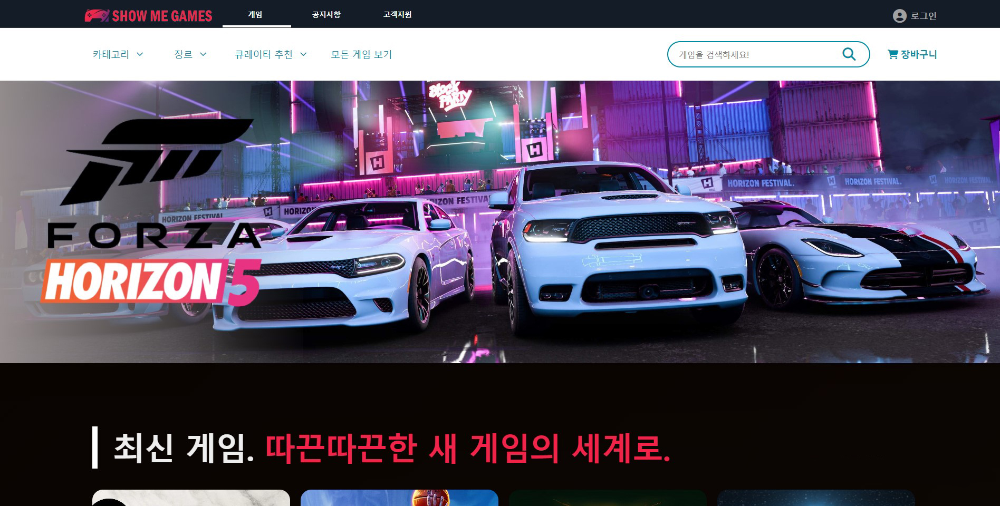
프로젝트 구경가기: http://3.39.6.147:8090/smg/
프로젝트 개요
주제
게임 판매사이트 제작
기간
2023년 7월 13일 ~ 2023년 08월 말(6주)
인원
6명
담당 역할
- 메인페이지 - 회원가입 기능, 자주묻는질문 페이지
- 마이페이지 - 공통 레이아웃, 회원정보와 프로필 변경
- 관리자페이지 - 관리자 로그인 세션관리, 공통 레이아웃, 게임 정보 수정
개발환경
언어
Java 8 (JDK 1.8), JSP(2.1), CSS, JavaScript
서버
Apache Tomcat 9.0, AWS EC2
프레임워크
Spring framework 5.2.24. RELEASE
DB
Oracle (11g)
IDE
Spring(STS 3)
API, 라이브러리
네이버 API, log4j2, jstl, MyBatis, HikariCP, lombok, Jquery 등
담당 역할
회원가입
- JS 정규식을 이용한 입력 데이터 검사
- 입력 형식이 정규식에 부합하면 css를 통해 알려줍니다.
- 모든 입력 데이터가 부합하고, 약관에 동의했을 때 form 데이터가 전달됩니다.
- 입력 형식에 대한 정보는 '규정' 항목을 클릭시 항목 아래로 관련 정보가 슬라이드됩니다.
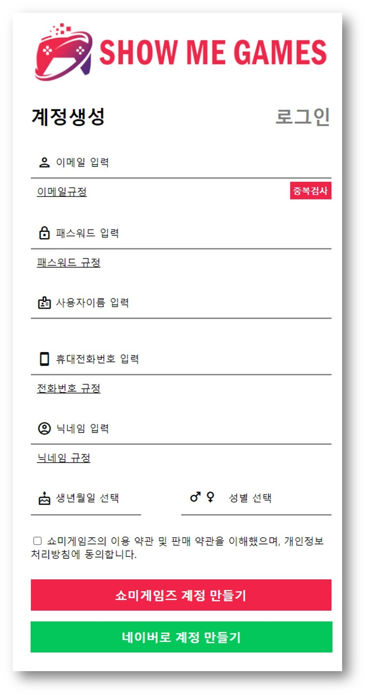
UX를 고려한 레이아웃 효과
- 입력 전, 호버 시, 형식에 맞지 않을 때, 잘 입력했을 때 각각 세밀하게 효과를 줬습니다.
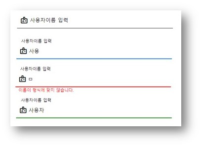
네이버 API 활용한 회원가입
- ajax로 access_token과 유저정보를 같이 받아옵니다.
- 받아온 정보를 토대로 저희 웹사이트에서 필요로 하는 입력정보를 자동입력하고 그 외 필수 정보에 대해서만 입력을 요구합니다.
사용자 정보 암호화
- 비밀번호를 SHA-256 방식으로 암호화합니다.
- 회원가입 성공시 사용자가 입력한 비밀번호를 Java에 내장된 hash 클래스를 이용하여 단방향 암호화를 진행함으로써 보안성을 높입니다.
- DB에는 SHA-256방식으로 byte화된 비밀번호를 16진수화해서 저장하기 때문에 DB를 직접 조회할 수 있더라도 사용자의 비밀번호를 알 수 없습니다.
기존회원 검사
- 이메일 중복검사를 통해 이미 가입된 회원의 가입을 막습니다.
- 소셜 회원가입의 경우, DB에 저장된 소셜키 값을 비교하여, 소셜키가 DB에 이미 저장되어 있으면 로그인으로 유도되도록 하였습니다.
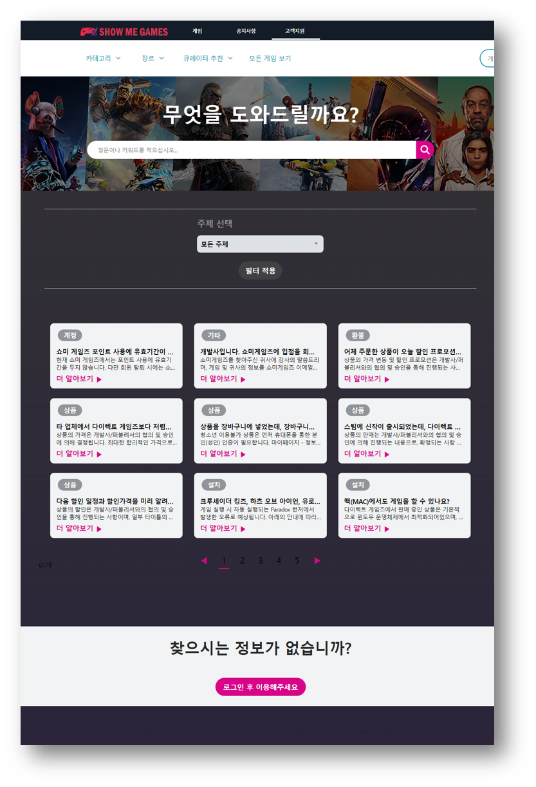
자주묻는질문 페이지
- 그리드를 활용해 3x3영역에 최신순으로 콘텐츠를 나열해주었습니다.
- 직접 제작한 페이징 기능을 활용하여 페이지 이동식으로 여러개의 콘텐츠를 볼 수 있도록 했습니다.
- [무엇을 도와드릴까요?] 하단의 검색기능은 내용을 입력하면 DB에서 해당하는 문자열이 있는지 검사한 후, SELECT 해올 수 있도록 만들었습니다. 조회 내용이 없다면 아래 그림과 같이 목록으로 이동할 수 있는 버튼이 나타나도록 처리를 했습니다. 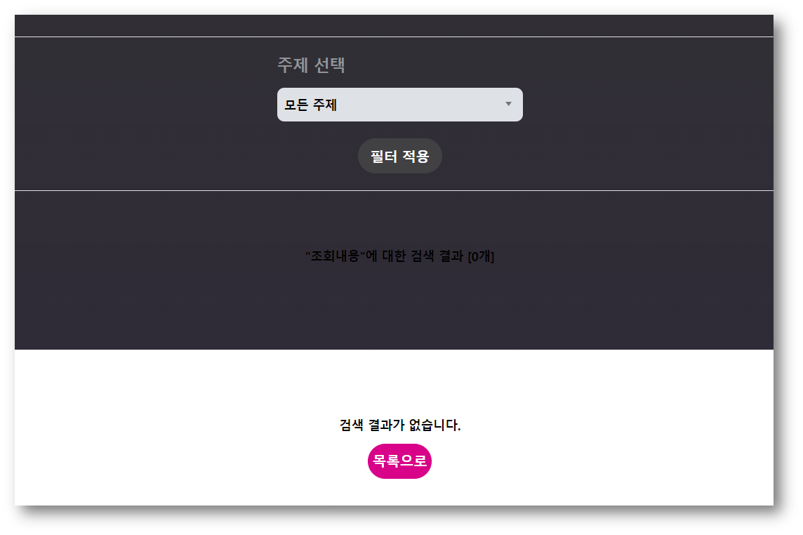
- 콘텐츠 내용은 'display: -webkit-box' 속성을 활용하여 두 줄까지만 간결하게 출력하도록 하였으며 두 줄 이상의 내용이 있으면 ...을 이용하여 표시했습니다.
주제선택
- 주제 선택에서 특정 주제를 선택하면 해당 머리말로 분류된 콘텐츠만을 출력합니다.
자세한 내용 보기
- 콘텐츠 박스를 클릭하면 해당 콘텐츠를 자세히 볼 수 있는 페이지로 이동합니다.
- 내용은 아래와 같이 간결하게 표현하였으나 이후의 요구사항에 따라 추가적인 내용을 넣을 수 있도록 여백을 남겨두었습니다.
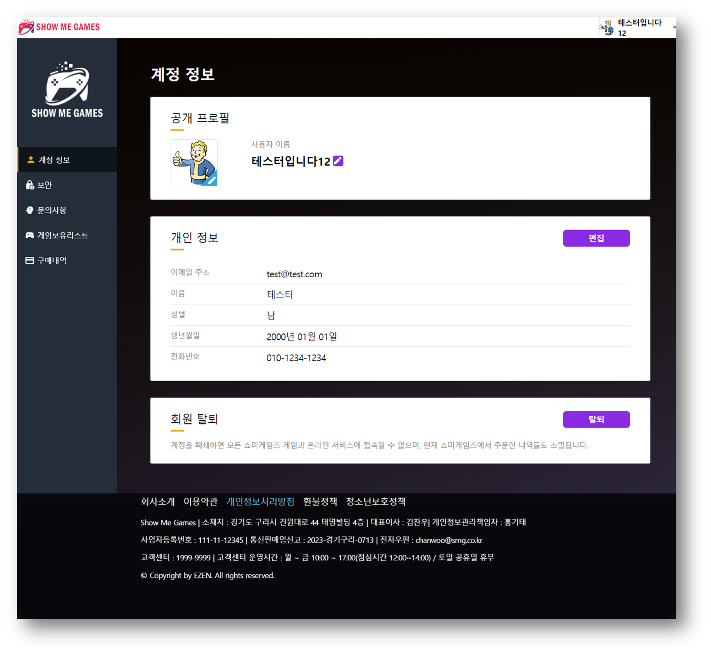
마이페이지 레이아웃
- 사용자 로그인 후 마이페이지로 이동하면 나오는 첫 화면입니다.
- 좌측 사이드바를 통해 원하는 기능으로 쉽게 이동하는 것이 가능합니다.
- 상단바에는 현재 로그인한 계정이 표시되며 클릭시 로그아웃 버튼이 나타납니다. 이를 통해 세션을 해제할 수 있습니다. 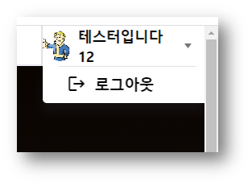
- 상단바 로고 또는 사이드바 로고를 클릭하면 index페이지로 이동됩니다. UX를 고려하여 마이페이지 내 어떤 곳에서든 쉽게 메인페이지로 이동할 수 있도록 만들었습니다.
현재 선택된 페이지 확인하기
- 일반, 선택시, 호버시 각각 세밀하게 효과를 줌으로써 쉽게 현재 어떤 페이지에 있는지 확인할 수 있습니다. 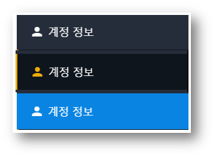
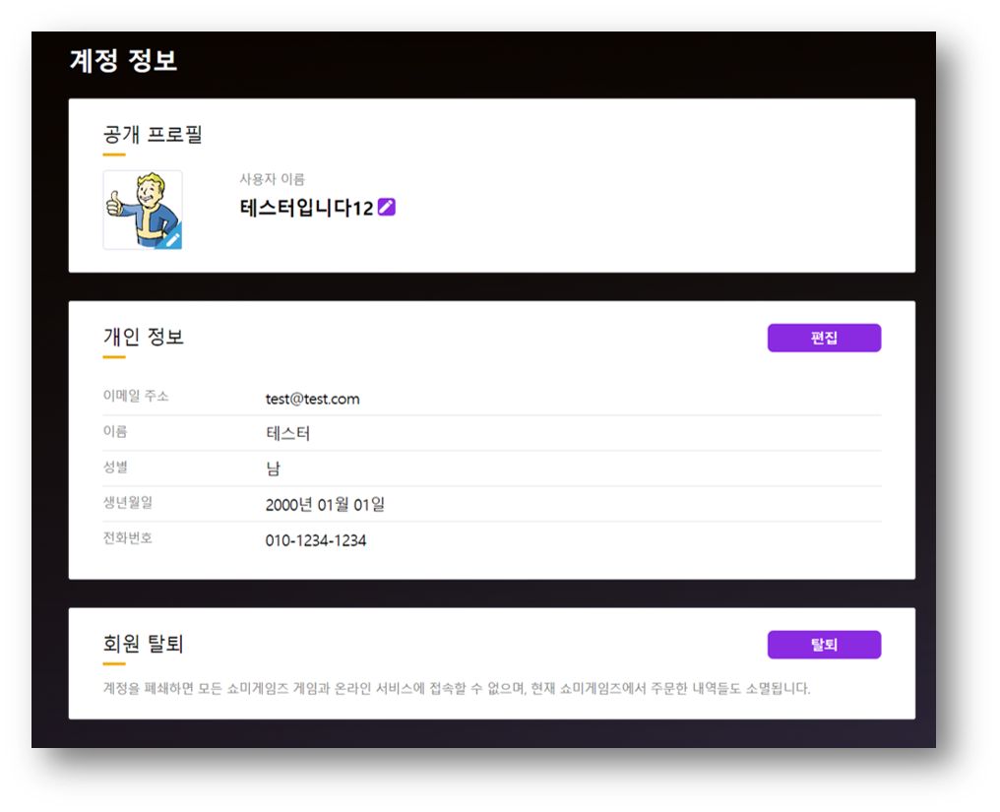
계정정보 확인하기
- 계정과 관련된 정보를 한 눈에 확인할 수 있으며 개인정보 수정부터, 탈퇴까지 가능합니다.
- 모아두되, 정리되어 보이도록 영역을 나눠서 표현했습니다.
개인정보 수정
- 개인정보 영역의 편집 버튼을 클릭시 해당 영역이 아래의 영역으로 교체됩니다. 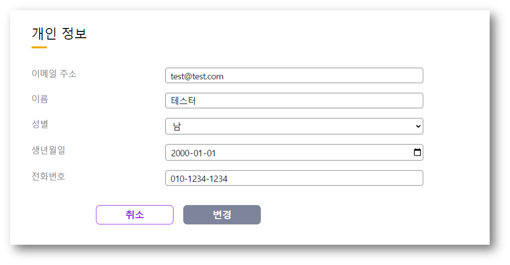
- 회원이 내용을 변경하기 전까지는 하단의 변경 버튼이 비활성화되어 있습니다.
- 성별처럼 입력할 수 있는 내용이 정해져 있는 경우 DB의 무결성을 위해 select박스를 이용하였습니다. 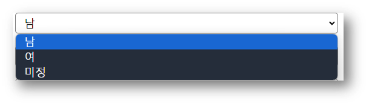
프로필사진 변경, 닉네임 변경
- 펜 모양 아이콘을 클릭하면 정보 수정을 위한 모달창이 열리도록 하였습니다.
- 직관적이면서도 전체 레이아웃을 해치지 않도록 하였습니다.
- 아래의 그림에서 왼쪽은 프로필사진 변경, 오른쪽은 닉네임변경 모달창의 모습입니다.
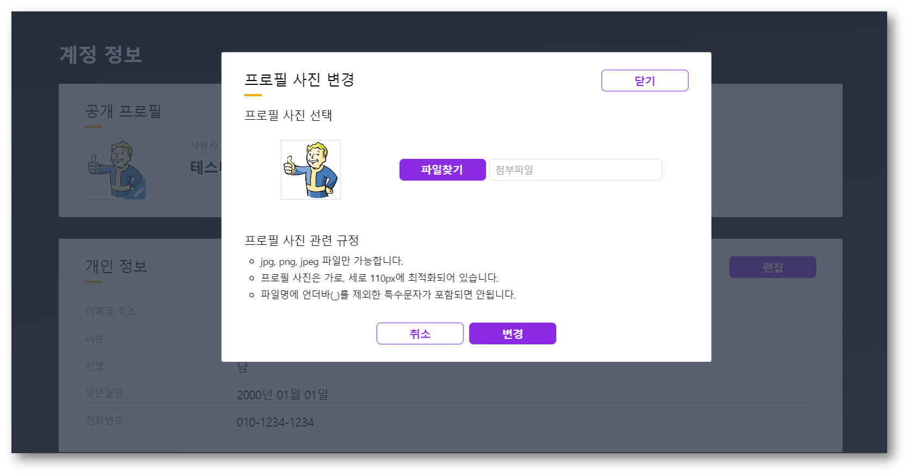
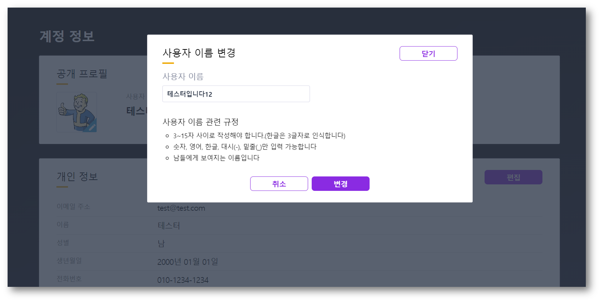
회원탈퇴 기능
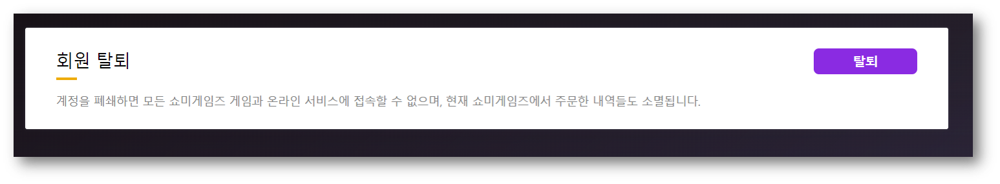
- 회원탈퇴를 선택시 오른쪽과 같은 회원탈퇴 확인창이 출력됩니다. 정확한 문자열을 입력했을 시에만 탈퇴 요청을 보낼 수 있습니다.
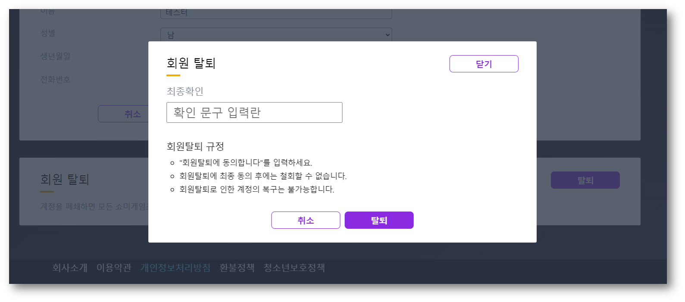
탈퇴한 회원 DB처리
- 회원탈퇴시 초기에는 DB에서 회원정보를 완벽히 DELETE 시키는 방향으로 생각했습니다. 하지만 매출집계 등 탈퇴된 회원정보가 필요한 부분이 있어서 DELETE 시키지않고 회원의 모든 정보를 null로 전환하는 UPDATE작업을 진행하는 방식으로 전환했습니다. 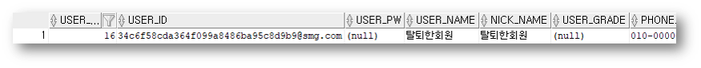
- USER_ID는 고유값으로 겹쳐서는 안되기 때문에 UUID를 활용, 랜덤한 값이되 겹치지 않는 값으로 변환했습니다.
- USER_NAME, NICK_NAME은 다른 기능에서 보여질 때 확실하게 탈퇴한 회원임을 알 수 있도록 표시했습니다.
- 전화번호는 DB 제약사항과 무결성을 위해 010-0000-0000으로 형식을 지키되 무의미한 정보로 대체했습니다. 기타 null처리해도 무관한 데이터는 null로 처리했습니다.
비밀번호 변경하기
- 비밀번호는 차후 2차비밀번호 등의 보안기능 확장성을 위해서 계정정보 탭이 아닌 보안탭에서 처리합니다.
- 변경 버튼을 클릭하면 변경을 위한 모달창이 열립니다.


비밀번호 변경 확인
- 기존 비밀번호를 정확하게 입력했을 때 비밀번호 변경 페이지로 이동할 수 있습니다.
- 비밀번호를 잘못 입력하면, 보안페이지로 리다이렉트 되며 다음과 같이 표시해줍니다.

비밀번호 변경 페이지
- 비밀번호를 잘 입력하면 다음과 같은 변경 페이지를 확인할 수 있습니다.
- 규정과 일치하는 비밀번호를 입력해야만 변경이 가능합니다.
규정에 맞으면 오른쪽에 아래와 같이 표시해줍니다.


비밀번호 변경 후처리
- 비밀번호가 성공적으로 변경되면 오른쪽과 같이 보안페이지로 리다이렉트되며 성공 메세지를 표시합니다.
- 비밀번호 변경 후 사용자가 새로고침 버튼을 눌렀을 때 비밀번호 변경에 대한 요청이 재요청 되지 않도록 POST -> REDIRECT -> GET 패턴을 이용하여 POST 재요청을 막았습니다.

관리자 로그인 기능
- 관리자 로그인 페이지는 메인페이지에서 보여지지 않고 숨겨져 있는만큼 불필요한 레이아웃은 빼고 간결성을 높였습니다.
- 정확한 아이디와 비밀번호를 입력해야만 로그인 가능합니다.
- 로그인 실패시 힌트를 주지않기 위해 아래와 같이 실패 메세지만 출력합니다.
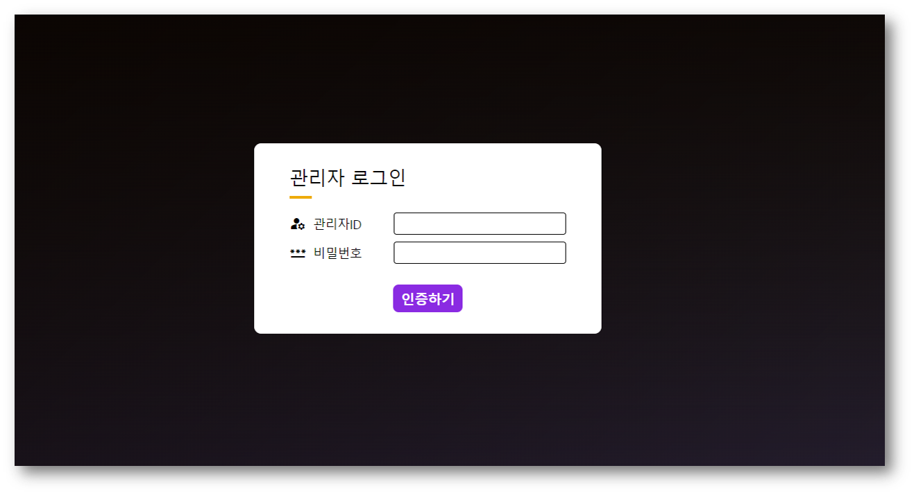

관리자 세션 관리
- 성공적으로 로그인하면 다음과 같이 관리자 메인페이지로 이동합니다.
- 이 페이지로 넘어오는 처리과정에서 세션에 관리자 고유넘버를 저장합니다.
- url을 검사하여 /admin 이하에 대한 요청이 있을 때 interceptor를 이용한 session 검사가 이루어집니다. 이 때 세션에 manager_token이라는 정보가 없다면 관리자 로그인 페이지로 이동하는 방식으로 세션을 관리합니다.
- 메인페이지 이후 모든 단계에서 이 과정이 이루어지며 세션정보가 없다면 관리자페이지를 볼 수 없습니다.
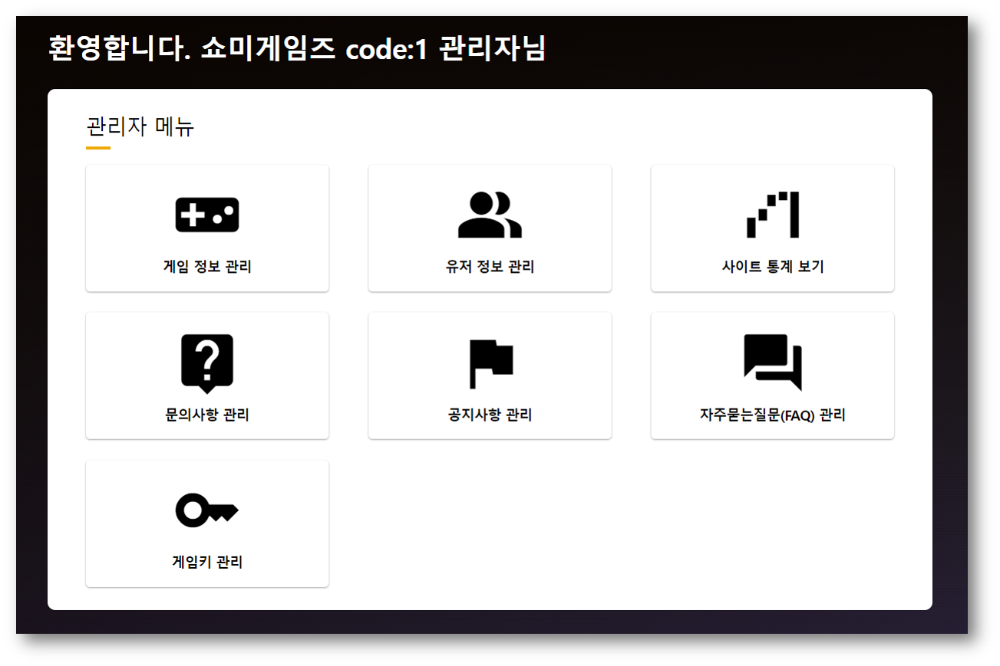
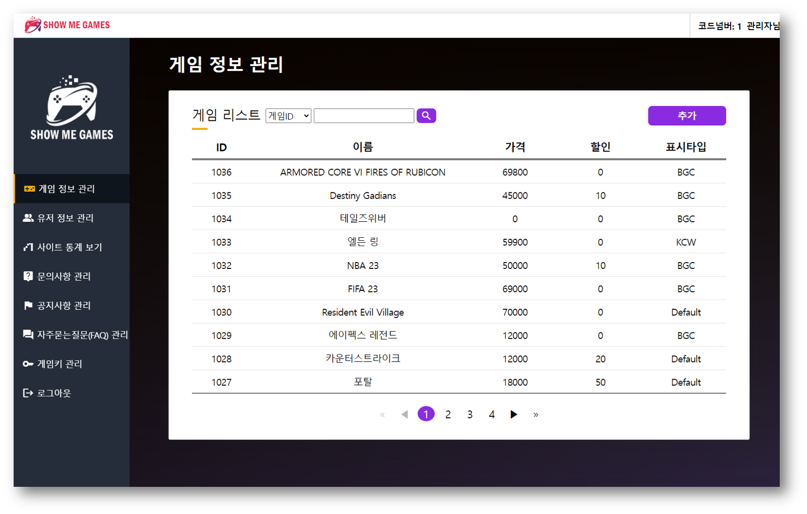
관리자 페이지 레이아웃
- 로그인 메인페이지에서 선택한 기능에 따라 보게되는 다음 페이지입니다.
- 기본구성은 마이페이지의 레이아웃을 가져왔습니다.
관리자 로그아웃
- 저는 관리자에서 전체레이아웃, [게임정보관리] 파트와 함께 [관리자세션관리]를 맡았기 때문에 세션 종료 기능을 소개하겠습니다.
- 종료 버튼을 누르게 되면 세션 정보에 'manager_token'에 관한 정보를 삭제하고 index페이지로 이동하는 간단한 기능입니다. 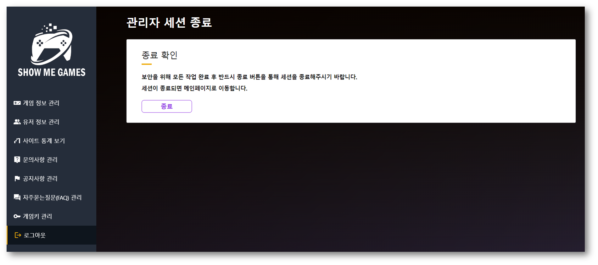
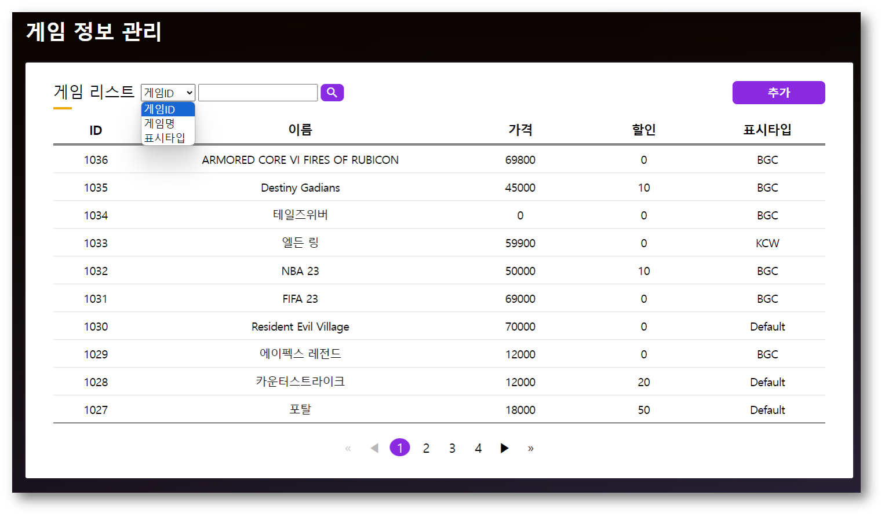
게임 정보 관리 페이지
- 게임 정보 관리 페이지는 다음과 같이 10개씩 최신 입력순으로 나타나도록 되어있습니다.
- 직접 제작한 페이징 기능을 이용하여 페이지 이동할 수 있으며 큰화살표를 누르면 한페이지씩 이동하고 >> 버튼을 누르면 5페이지를 기준으로 이동합니다. 1~5페이지에서는 6페이지로 이동하도록 되어있는데 총 페이지가 4페이지밖에 안되어서 가장 마지막 페이지인 4페이지로 이동합니다. << 버튼은 1페이지로 이동합니다.
- 게임 제목을 클릭하면 해당 게임 상세보기 페이지로 이동합니다.
- 추가 버튼 누르면 게임을 추가할 수 있는 페이지로 이동합니다.
- 검색창 좌측 select 기능 이용하여 게임id, 게임명, 표시타입 별로 검색하여 원하는 정보를 찾을 수 있습니다.
- 검색기능은 기본적으로 DB의 LIKE을 활용하고 있습니다. 이 때 표시타입에서 Default처리된 게임들은 해당 column이 null인 경우입니다.
- null의 경우 LIKE로 검색이 불가능하기 때문에 Java의 contain 메서드를 활용하여 사용자가 Default에 연관된 문자를 입력했는지 검사합니다. 그 결과에 따라 게임 중 IS NULL에 걸리는 게임들을 검색 결과에 더해줍니다. 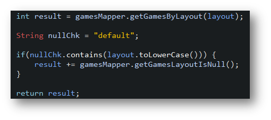
- 위의 로직은 1차적으로 사용자 입력 값에 대한 총 게임 개수를 구하고, default와 연관된 문자가 있을 경우 IS NULL에 해당하는 게임들 또한 게임 개수에 더해주는 로직입니다.
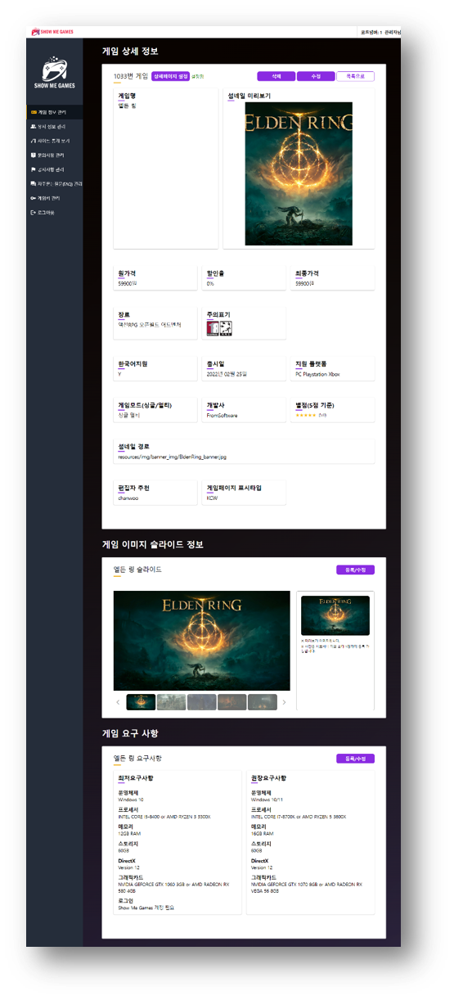
게임 상세보기 페이지
- 게임에 관련된 모든 정보를 한 페이지 내에서 조회할 수 있습니다.
- 최상단엔 게임의 레이아웃 페이지를 직접 설정하는 상세페이지 설정 버튼, 게임 삭제 버튼, 게임 내용 수정 버튼, 목록으로 돌아가기 버튼이 있습니다.
- 내용이 너무 길어서 헷갈리지 않도록 게임 페이지에서 게임슬라이드에 들어갈 사진들을 표시하는 [슬라이드 정보 영역]과 [게임 요구사항 영역]은 [게임 상세 정보 영역]과 구분지어 두었습니다.
- 각 영역 별로 등록/수정 버튼이 있어서 직관적으로 이해할 수 있습니다.
- [게임상세정보] 영역에서 각 내용들은 번잡스럽지 않도록 box-shadow 속성을 이용하여 구분지었습니다.
- 주의표기 항목은 DB에 저장된 내용을 가져올 때 사진으로 표현하도록 했습니다. 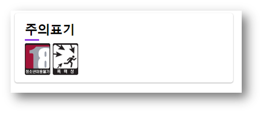
최상단 이동 버튼
-
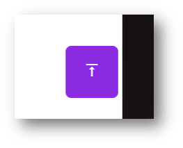
- 표시되는 내용이 많아 상단으로 이동할 때 어려움을 겪지 않도록 스크롤바가 600이상 이동했을 때 최상단 이동 버튼이 노출되도록 했습니다.
게임 이미지 슬라이드
- 실제 게임 표기화면과 유사한 미리보기를 제공하기 위하여 관리자 페이지에서도 슬라이드 기능을 도입했습니다.
게임 요구 사항
- 실제 게임 표기화면과 동일한 정보를 제공하면서도 관리자 레이아웃에 맞춰 표현했습니다.
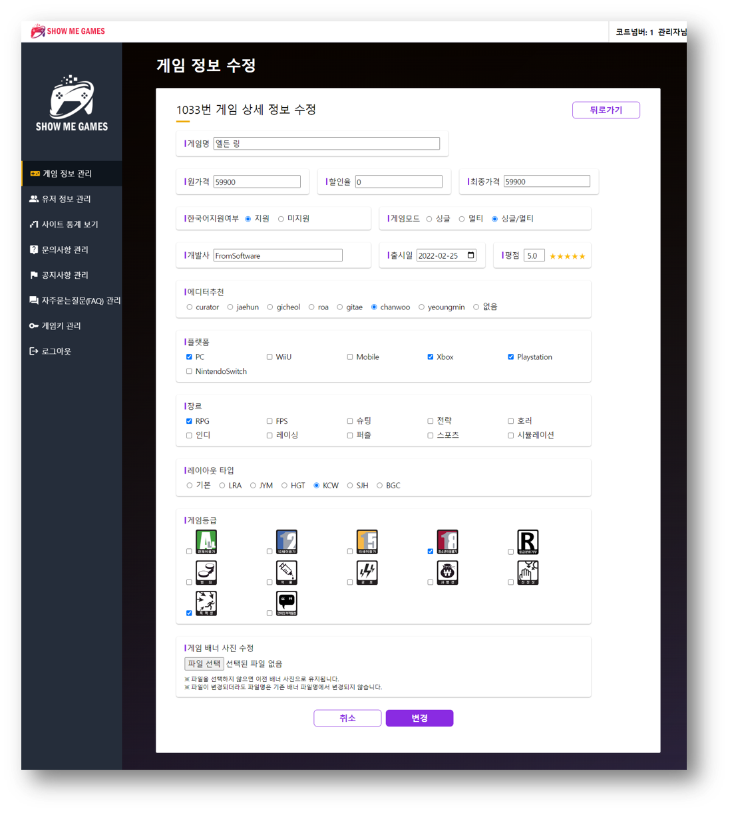
게임 내용 수정 페이지
- 게임 기본 정보를 수정할 수 있습니다.
- 필수 정보들은 required 처리 되어있어서 입력하지 않으면 form이 제출되지 않습니다.
평점 별점 표시기능
- 0 ~ 5.0 단위에 따라 별 개수가 변환됩니다.
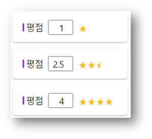
최종가격 계산기능
- 원가격, 할인율 value에 따라 자동으로 계산해줍니다.
체크박스 기본값 처리 기능
- 아무것도 체크하지 않아서 null로 처리되는 상황을 방지하기 위하여 체크된 input이 없을 경우 미리 설정해둔 default값을 넣어주는 기능이 있습니다. 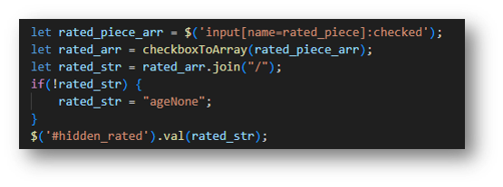
- 위 사진은 Javascript 상에서 form이 제출됐을 때 check된 항목이 없다면 ageNone을 넣어주는 로직입니다.
게임 배너 사진 수정 기능
- 웹페이지 내에서 사진 및 비디오를 저장하는 모든 전송은 MultipartFile 클래스를 이용하여 이루어집니다.
- 경로관리는 application.properties 파일을 활용하여 git에 저장되지 않는 설정값을 활용하고 있습니다.
- 파일을 저장을 요청할 경우 서블릿의 realpath method를 활용하여 서버상의 경로를 받습니다.
- 그리고 properites에 저장된 물리 경로를 value 어노테이션을 활용하여 받아옵니다. 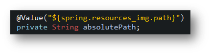
- 양쪽 경로 모두에 파일을 저장합니다.
- 이렇게 하는 이유는 본 프로젝트 이미지 파일 관리가 프로젝트 내부 폴더에서 이루어지고 있기 때문입니다.
- 서버상의 경로에 저장해주지 않으면 파일 저장에 따른 변경이 즉각적으로 이루어지지 않습니다.
- 물리 경로에 저장해주지 않으면 서버가 종료되었을 때 파일이 소실됩니다.
- 때문에 해당 프로젝트에서 모든 파일의 저장은 서버, 물리 경로 두 곳 모두에 이루어집니다.

게임 슬라이드 수정 페이지
- 게임 배너이미지 수정과 같은 로직으로 이루어집니다. 다만 사용자가 슬라이드 순서를 정할 수 있도록 파일을 한 번에 등록하는 것이 아닌 각 사진 순서마다 선택하도록 했습니다.
- 서브배너는 게임 상세보기 페이지 우측에 표시되는 사진입니다. 슬라이드 이미지와 다르게 가로, 세로가 적용되는 비율이 중요하기 때문에 분리했습니다.
게임 요구사항 수정
- 게임 요구사항 수정 페이지는 각 게임마다 차이가 있어서 특별한 제한을 두지 않았습니다.
- 비운채로 등록하더라도 제약이 있지는 않지만 DB에 등록되었다는 기록이 남기 때문에 한 번도 등록/수정 시도를 하지 않았을 때와는 상세보기 페이지에서 표시되는 내용에 차이가 생깁니다.
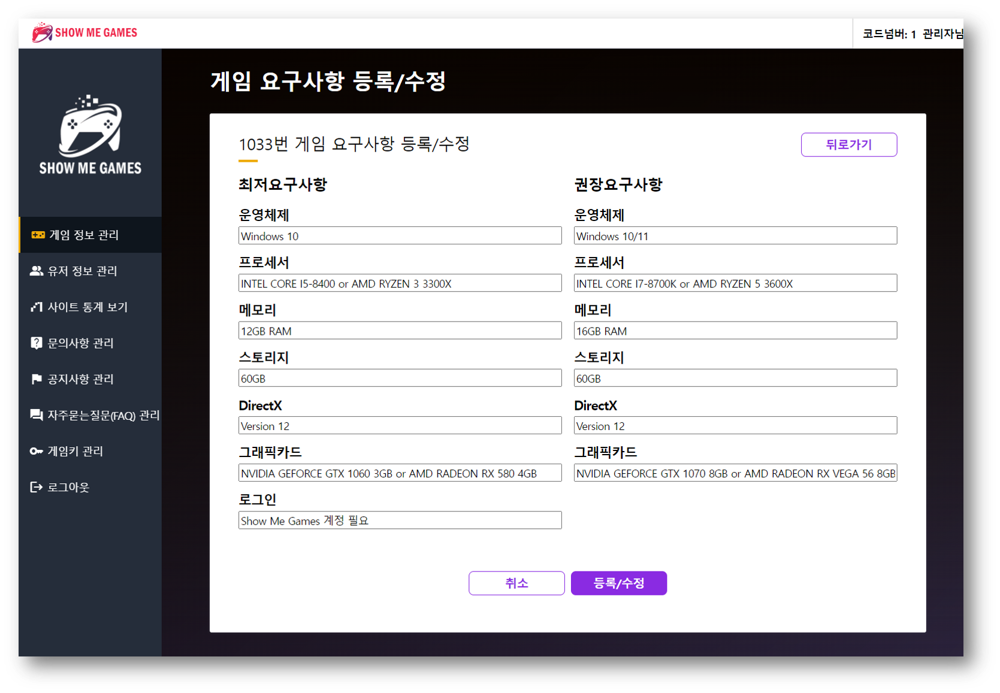
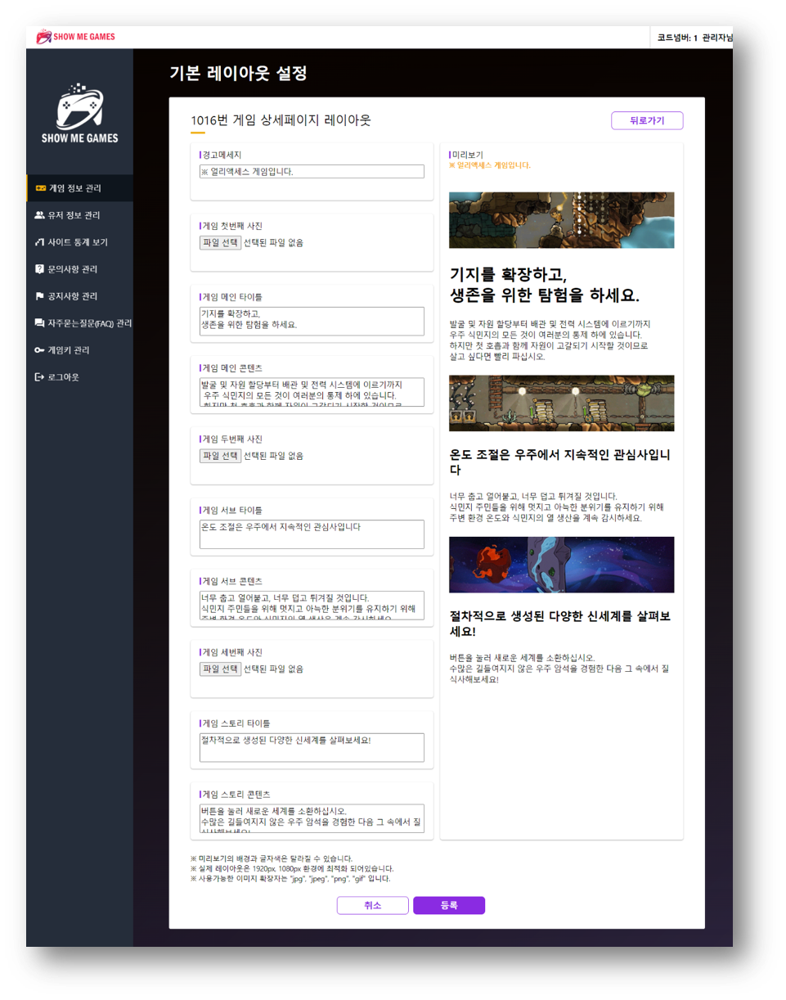
게임 상세페이지 수정
- 게임 상세보기에서 상세페이지 수정을 누르면 각 게임마다 설정한 표시타입에 따라 다른 수정페이지로 연결됩니다.
- 해당 페이지는 제가 맡았던 hgt 타입에 해당하는 수정페이지입니다.
- 연결되는 페이지가 다른 이유는 레이아웃마다 요구하는 정보가 다르기 때문입니다.
- 입력받는 정보 순서는 실제 게임 디테일 페이지와 동일합니다.
미리보기 기능
- 왼쪽 input에서 입력된 내용을 오른쪽 미리보기 창에서 바로 확인해볼 수 있습니다.
- 이미지 미리보기는 js의 FileReader 클래스 기능을 이용했습니다.
crlf <-> <br> 자동전환 기능
- 수정페이지에서 사용자가 입력한 엔터가
DB상에
로 자동전환 되어서 나중에 값을 끌어왔을 때 편하게 활용할 수 있도록 했습니다. - 오른쪽 메서드를 기반으로 각 dto 클래스에 전체 전환을 해주는 메서드를 하나씩 만들어서 insert, update, select 시에 활용했습니다.
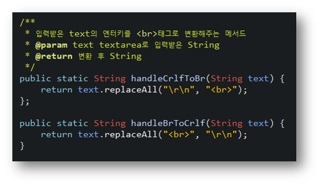
끝까지 봐주셔서 감사합니다.(/≧▽≦)/